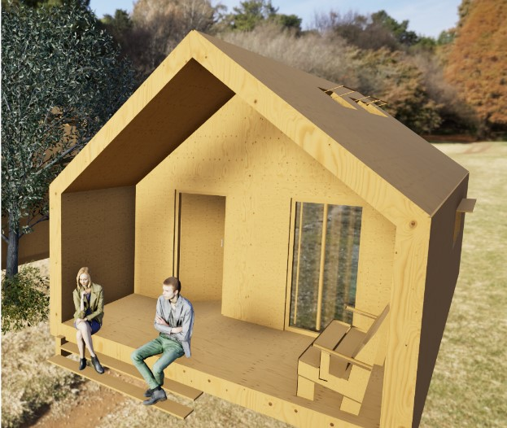

Homecraft
Master thesis | 2024 - 2025
Making shelter design and construction accessible to non-experts through CNC-aided design and Makerspaces.
Making shelter design and construction accessible to non-experts through CNC-aided design and Makerspaces.


